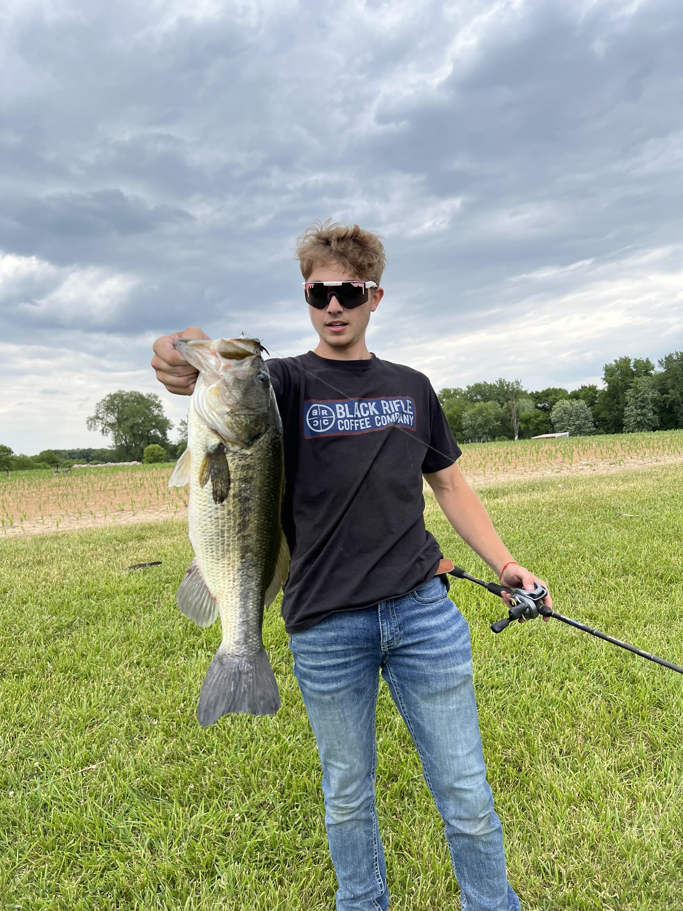

Dylan Sierer

I have been employed on and off for the past 4 years, since I was 15 years old.
My employments vary from fast food, all the way to my most recent venture, property management.
In the middle, I have 3 years of landscaping/construction experience under 3 seperate companies.
I have exceeded expectations and excelled in my prior employments. My academic acheivements include a highschool diploma.
Education
Graduated with Honors from Peoria Notre Dame Highschool in May of 2022
Member of the Football Team
Qualified for sectionals as a member of the Bass Fishing Team
Honor roll student
Work Experience
Chick-fil-a: Served as a hospitality member. Went above and beyond ensuring guests were treated with premium, quality service.
NJH Hardscapes: Served as a laborer for 3 landscaping seasons. Worked to build patios, retaining walls, decks, and a variety of outdoor jobs. Performed exceptionally well on any
job I was tasked with and always pushed to give the customer a final product they loved.
Blackhawk Construction: Worked to build a variety of products. Constructed building additions, general home remodeling, and a limited number of custom wood-working projects.
Operated in a meticulous fashion to ensure I was involved in any task, always ready to learn, improve, and use my skills as needed.
Commercial Irrigation: Assisted in the installation of commercial and residential irrigation systems. Learned the ins ad outs of irrigation with the potential to learn much more.
Excelled in focus and integrity ensuring I was always being a productive member of the team.
Skills
Always attentive and ready to take on new challenges.
Extremely hard worker in addition to my exceptional problem-solving skills, always looking for new, better ways to complete my duties.
Get along well with any group of people and am able to adapt very well to new environments.
Strong minded. I do not let my emotions take over. Am able to keep a calm, cool, and collected mindset no matter the stress level of a situation.
Contact
-
About